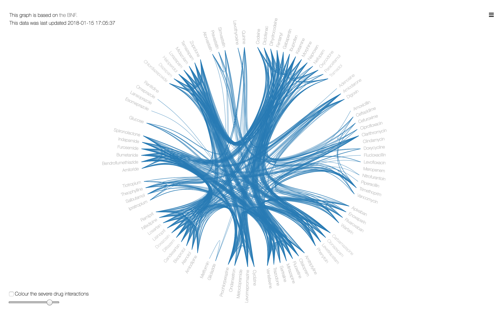
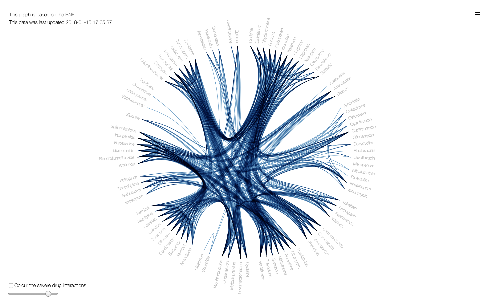
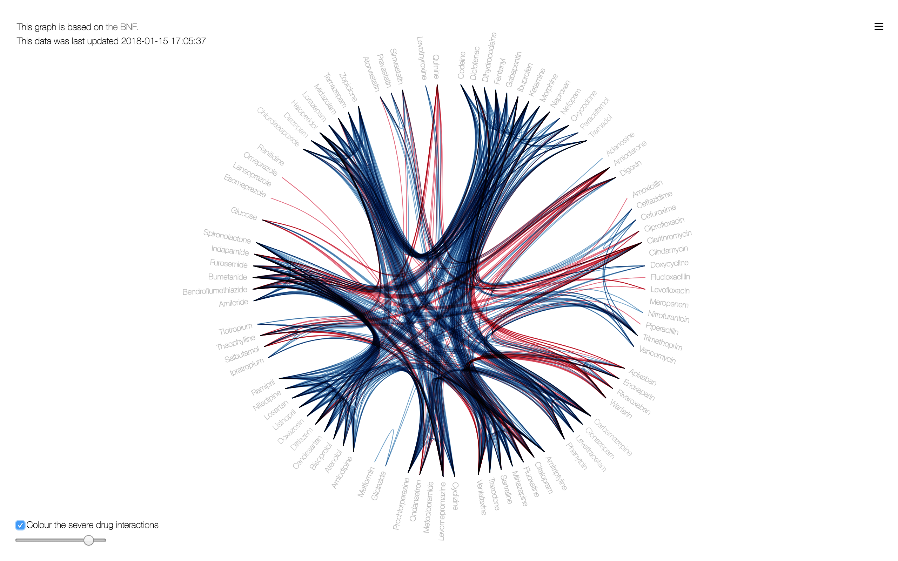
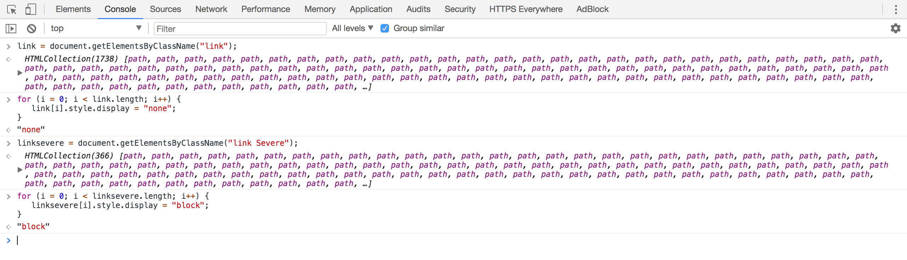
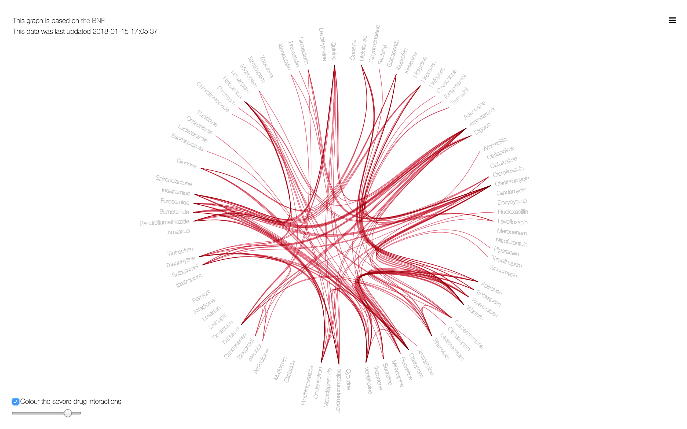

Mix-Mode-Multiply
BNF
I recently saw the following tweet from Mike Bostock, creator of D3.js.
CSS mix-blend-mode: multiply is great for improving readability with overdraw (occlusion). Here’s a before/after with hierarchical edge bundling. pic.twitter.com/V4J3vDToZc
— Mike Bostock (@mbostock) May 23, 2018
And I thought I’d try it out with my BNF interactions project to see how it might affect the intuitive feel of the graphics. So it starts off below, with the top 100 drugs and their interactions plotted as lines between points on the edge of the circle.

I added one line of css which creates a colour change where lines overlap each other.
path { mix-blend-mode: multiply; }
The lines darken.

Does it distract a little from the severe interactions?

Lets remove everything else.

Done.

Prev: 'OpenprescribingR Plots Updated'